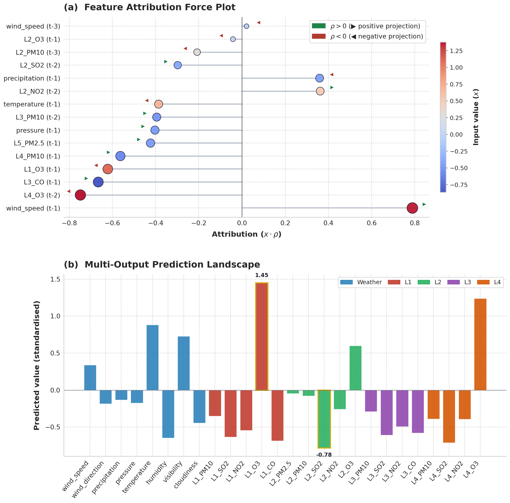

The growing adoption of multi-output machine learning models in high-stakes applications has highlighted the need for explainability approaches that account for interdependencies among outputs. Existing xAI approaches predominantly address single-output settings and often fail to capture shared predictive structure across multiple targets.
We propose eXProj, a model-agnostic explainability framework based on projection operators that generates deterministic local and global explanations for multi-output models. eXProj projects feature contributions onto output subspaces, enabling systematic analysis of shared and output-specific model behaviour while remaining computationally efficient.
The proposed approach is evaluated on several real-world datasets, including semiconductor manufacturing and air quality prediction, and compared against established xAI techniques using stability, complexity, and runtime metrics. A user study further assesses the interpretability of the generated explanations from a human-centered perspective.
The results demonstrate that eXProj provides stable and interpretable explanations for multi-output models and supports a deeper understanding of model behaviour beyond independent feature attribution.
Method Overview
eXProj explains multi-output models by projecting input features onto the subspace spanned by predicted outputs. Unlike traditional methods that explain each output independently, eXProj computes a single projection correlation coefficient ρ per feature that captures its alignment with the joint output space.
Figure 1: eXProj framework overview. A black-box model maps high-dimensional input features to multiple correlated outputs Ŷ₁, Ŷ₂, …, Ŷₙ. The eXProj method projects input features onto the subspace spanned by all predicted outputs, computing projection correlation coefficients ρ that quantify each feature's alignment with the joint output space. Positive ρ coefficients (green) indicate direct influence, negative ρ (red) indicate inverse influence, and near-zero ρ (gray) indicate negligible contribution. This approach reveals shared and output-specific structures while providing transparent and interpretable explanations.
Results
Comparison with Baseline Methods
eXProj was compared against SHAP (KernelSHAP, DeepExplainer), LIME, and TreeInterpreter across five benchmark datasets. The evaluation used Quantus metrics adapted for multi-output settings:
Stability: Measures explanation stability under input perturbations
Complexity: Quantifies explanation complexity and cognitive load
Runtime: Computational efficiency for practical deployment
Key Findings
Stability: eXProj achieves competitive explanation stability compared to SHAP and LIME across multiple datasets.
Efficiency: Deterministic computation with substantially reduced runtime compared to sampling-based methods.
Interpretability: User study confirms consistent satisfaction across expert and non-expert users.
Unified explanations: Single projection coefficient per feature captures contribution to all outputs simultaneously.
Local Explanation Example

Figure 2: Local explanation for a single test instance from the air quality (aqi) dataset.
Top panel: Feature Attribution Force Plot displaying the top-15 features ranked by projection importance. The horizontal position indicates the attribution score, computed as the product of the standardised input value and the projection correlation coefficient (x · ρ). Marker size is proportional to the absolute attribution, while marker colour encodes the standardised input value (blue: low, red: high). Directional indicators show the sign of ρ: rightward arrows (green) denote positive alignment with the output subspace, and leftward arrows (red) denote inverse alignment. For example, L4_O₃ (t-2) has a high input value (red) but negative ρ (leftward arrow), resulting in a strong negative attribution; this indicates that elevated ozone at Location 4 two days prior opposes the dominant output direction.
Bottom panel: Multi-Output Prediction Landscape showing the corresponding prediction vector (26 outputs, z-score normalised). Bars are grouped by category: Weather (meteorological variables) and L1–L4 (monitoring locations). Notable peaks include L1_O₃ (1.45) and L4_O₃ (1.24), while L2_SO₂ shows a strong negative value (-0.78).
Conclusion
This work introduces a projection-based explanatory paradigm for vector-valued learning that shifts the focus from output-wise attribution to geometric relationships between input features and the output subspace. Rather than treating each output independently, eXProj grounds explanations in the structural geometry of the prediction space, offering a perspective that can complement existing post-hoc methods.
The eXProj framework characterises multi-output model behaviour through the alignment of input features with the subspace spanned by predicted outputs, as quantified by the projective correlation coefficient ρ. Features with high |ρ| capture shared predictive structure—variables that the model relies on to influence multiple outputs in a coordinated manner. In contrast to per-output attribution, this formulation reveals how predictive information is distributed across the joint output space, exposing both shared drivers and output-specific influences within a single explanatory pass.
Beyond interpretability, the projection-based structure supports model diagnostics. Stable, high-alignment projections suggest robust and generalisable predictive dependencies, whereas inconsistent or counterintuitive projections may indicate spurious correlations, data leakage, or representation artefacts. The sign of the projection coefficient provides directional information that enables semantic validation against domain knowledge, allowing practitioners to assess whether learned relationships are physically or causally plausible.
The experimental results indicate that eXProj achieves competitive stability while substantially reducing computation time and explanation complexity relative to established methods. Its deterministic formulation eliminates variance due to sampling, which is advantageous in regulated or safety-critical settings where reproducibility of explanations is required.
BibTeX
@inproceedings{mevic2026exproj,
title={eXProj: Explaining Shared Predictive Structure in Multi-Output Models},
author={Mevi{\'c}, Amina and Szedmak, Sandor and Krivi{\'c}, Senka},
booktitle={Proceedings of the 4th World Conference on Explainable AI (xAI 2026)},
year={2026},
publisher={Springer}
}
Acknowledgement
The work is linked to the FID activities of the IPCEI on ME (Important Project of Common European Interest on Microelectronics), funded by national authorities from Germany, France, Italy, UK and Austria.
.png)